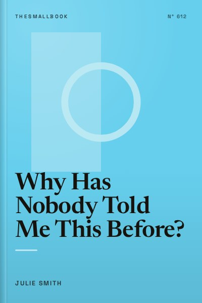

Library › Psychology & People
Why Has Nobody Told Me This Before? - Summary & Key Lessons

A clinical psychologist's toolkit for everyday mental health: mood, motivation, grief, fear and self-doubt.
📖 OPEN THE FULL INTERACTIVE BREAKDOWN →🌐 Read it in Hindi, Hinglish, Gujarati, Tamil & 22 more languages, with audio.
💡 The Big Idea
Dr Julie Smith, a clinical psychologist known for her short educational videos, wrote this book to share the tools she wishes everyone learned before they needed therapy. It is organised as a toolkit you can dip into when you need it, covering low mood, motivation, emotional pain, grief, self-doubt, fear, stress and finding meaning. Each chapter explains why we feel as we do and offers practical techniques drawn from evidence-based therapy. The message is that mental health is not only about avoiding illness; it is about building skills that help us cope and thrive.
🧠 The 8 Key Lessons
Lesson 1: Low Mood Has Patterns
Part 1: On Dark Places
Smith explains that low mood often comes from a combination of thoughts, physical state, behaviour and environment. When we feel low, we tend to withdraw, which deepens the low mood. Understanding this cycle helps us interrupt it. Small actions such as getting sunlight, moving the body or connecting with someone can shift mood.
📖 Example: A student feeling low after exams stays in bed, avoids friends and scrolls social media, which makes them feel worse. By going for a short walk and calling a friend, they interrupt the cycle and feel slightly better. Read the full example →
⚡ Do this: When you feel low, choose one small action: a ten-minute walk, opening the curtains, or messaging a friend.
Lesson 2: Motivation Follows Action
Part 2: On Motivation
We often wait to feel motivated before acting. Smith explains that motivation often comes after starting. Taking small steps creates momentum and improves mood. She suggests breaking tasks into tiny steps and focusing on starting rather than finishing.
📖 Example: Someone who wants to exercise but feels unmotivated decides to just put on their shoes. Once dressed, going for a short walk feels easier, and they end up exercising for 20 minutes. Read the full example →
⚡ Do this: Pick one task you are avoiding. Do only the first two minutes of it today.
Lesson 3: Emotional Pain: Feel It to Heal It
Part 3: On Emotional Pain
Avoiding painful emotions often makes them stronger. Smith encourages naming emotions, allowing them to be present and understanding what they are signalling. Emotions are information, not commands. Learning to sit with discomfort helps it pass naturally.
📖 Example: Instead of distracting yourself with your phone when feeling sad, you could name the feeling ('I feel sad because I miss my family') and allow yourself to feel it for a few minutes. Read the full example →
⚡ Do this: Next time you feel a strong emotion, name it out loud or in writing: 'I am feeling ___ because ___.'
Lesson 4: Grief Is Love With Nowhere to Go
Part 4: On Grief
Smith describes grief as a natural response to loss that does not follow a neat timeline. It can include sadness, anger, guilt and relief. She encourages allowing grief, maintaining routines where possible and seeking support. Grief does not disappear but changes over time.
📖 Example: People often feel pressure to 'move on' after losing someone. Smith suggests honouring memories, talking about the person and accepting that grief can come in waves. Read the full example →
⚡ Do this: If you are grieving, set aside time to remember the person or thing you lost: write a letter, look at photos or talk to someone.
Lesson 5: Self-Doubt and the Inner Critic
Part 5: On Self-Doubt
Many people have a harsh inner critic. Smith explains that self-criticism rarely motivates long-term change. Instead, self-compassion, treating yourself with kindness, supports resilience and growth. She suggests noticing critical thoughts and responding as you would to a friend.
📖 Example: After making a mistake at work, someone thinks, 'I am useless.' Practising self-compassion, they respond, 'Everyone makes mistakes. What can I learn from this?' Read the full example →
⚡ Do this: Write down one critical thought you often have about yourself. Next to it, write what you would say to a friend in the same situation.
Lesson 6: Fear and Anxiety: Face, Do Not Fight
Part 6: On Fear
Anxiety is the body's alarm system. Smith explains that avoiding feared situations reinforces anxiety. Gradual exposure, facing fears in small steps, helps reduce it. Breathing techniques, especially slow exhalations, can calm the body.
📖 Example: Someone afraid of public speaking starts by speaking in small groups, then gradually works up to larger audiences, reducing anxiety over time. Read the full example →
⚡ Do this: Practise slow breathing: inhale for four counts, exhale for six to eight counts, for two minutes.
Lesson 7: Stress: Not All Bad
Part 7: On Stress
Smith explains that stress can help us perform, but chronic stress harms health. Managing stress includes recognising signs, building recovery time and changing how we interpret stress. Viewing stress as the body preparing to meet a challenge can improve performance.
📖 Example: Before an exam, a student feels their heart racing. Instead of panicking, they remind themselves that the body is preparing to focus. Read the full example →
⚡ Do this: List three signs that tell you you are stressed. Choose one recovery activity to do when you notice them.
Lesson 8: A Meaningful Life
Part 8: On a Meaningful Life
Smith ends by discussing values and meaning. Knowing what matters to you helps guide decisions and provides resilience during hard times. She encourages identifying values and taking small actions aligned with them.
📖 Example: Someone who values family might choose to spend more time with loved ones even when work is busy, finding meaning in those connections. Read the full example →
⚡ Do this: Write down three values that matter most to you. Do one small action this week that reflects each one.
✅ 5-Step Action Plan
- Use one small mood-lifting action when you feel low.
- Start avoided tasks with just two minutes.
- Name emotions instead of distracting yourself.
- Practise slow breathing daily.
- Write your top three values and act on one each week.
⚠️ When This Doesn't Work
Smith's tools are useful for everyday struggles, but they are not a substitute for professional help in cases of severe depression, trauma or suicidal thoughts. If you are struggling deeply, reach out to a mental health professional or a helpline such as Tele-MANAS (14416 in India).
💀 The Graveyard Proves It
💬 Best Quotes from Why Has Nobody Told Me This Before?
- “Feelings are not facts.”
- “The way we respond to our emotions has a huge impact on how long they last.”
- “Self-compassion is not self-pity. It is treating yourself as you would a friend.”
Interactive version: mark lessons as read, listen in your language, share quote cards.